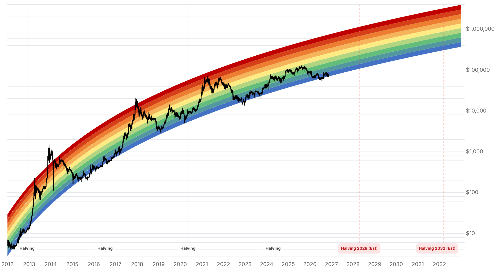

Reporte financiero
BTC cotiza en vivo a USD 69.006,82 (07:16 UTC), -3,31% vs. el cierre previo de USD 71.371,77 según Yahoo Finance -pero la caída de 24 horas es considerablemente mayor según otras fuentes: CoinGecko (vía CoinGabbar, medición a las 04:00 UTC) registró una baja de 6,8% hasta ~USD 68.904, desde ~USD 73.639 el día anterior. Es la novedad principal desde el reporte de ayer: un desplome generalizado y no exclusivo de bitcoin -Ethereum cayó ~6% a ~USD 1.936, la capitalización total del mercado cripto bajó 3,8% a USD 2,45 billones (trillion), y el Fear & Greed Index se derrumbó de 28 ("Fear") ayer a 20 ("Extreme Fear") hoy, su nivel más bajo en semanas y muy por debajo de 62 ("Greed") hace un mes. La dominancia de BTC subió a 56,6%, señal de que altcoins cayeron proporcionalmente más que bitcoin, consistente con un evento de de-leveraging/risk-off amplio más que con un catalizador específico de BTC. El telón de fondo inmediato es el dato de PPI de octubre en EE.UU., programado para hoy 13 de noviembre a las 8:30am ET (aún no publicado al momento de este reporte) -el mercado lo trata como evento de alto riesgo porque el PPI del mes anterior sorprendió al alza (+1,3% vs. +0,6% esperado, núcleo +0,7%), y una repetición de esa sorpresa podría reforzar la postura hawkish de la Fed de cara a diciembre. En flujos de ETFs, el 11 de noviembre (último dato de tftc.io) se registraron -USD 299,9M netos (IBIT -269,7M, GBTC -39,1M, parcialmente compensado por MSBT +9,0M), extendiendo a ocho la racha de sesiones consecutivas con salidas netas (el reporte de ayer registraba siete, hasta el 10 de noviembre) y acumulando -USD 1.900M en lo que va de noviembre (8 sesiones, 7 de salida y solo 1 de entrada). Otras noticias cripto del día: el Departamento de Justicia de EE.UU. congeló más de USD 1.200M en criptomonedas robadas de Binance -aproximadamente la mitad de un robo de USD 6.000M-, y Upbit suspendió depósitos/retiros de OSMO tras una interrupción en la producción de bloques de la cadena Osmosis. Como telón de fondo de sentimiento de riesgo más amplio (no cripto-específico), el inversor Michael Burry instó a salir de Nvidia citando riesgos de concentración de clientes y financiamiento circular -sin relación causal verificada con la caída de bitcoin, pero coincide con el mismo día de risk-off en activos de riesgo. Sobre MSCI/Strategy (MSTR): sin novedades verificadas desde la confirmación de ayer de su exclusión de los índices MSCI (vigente al cierre del 30 de noviembre); no se encontró dato de precio de MSTR específico del 12 de noviembre que agregue a lo ya reportado. Sobre Nvidia/Jensen Huang: el plazo del 11 de noviembre para que Huang respondiera a la solicitud de los tres comités de la Cámara venció sin confirmación pública disponible, igual que ayer; el próximo evento verificable sigue siendo el reporte de resultados de Nvidia el 17 de noviembre. Sin novedades verificadas desde ayer en: Irán, Clarity Act, BTCPay Server, la apelación del Reino Unido sobre los 61.000 BTC y Cantor Fitzgerald.
Según datos de CoinGecko recopilados por CoinGabbar a las 04:00 UTC del 13 de noviembre, bitcoin cayó 6,8% en 24 horas a ~USD 68.904 (desde ~USD 73.639 el día anterior), con una capitalización de mercado de ~USD 1,38 billones. Ethereum cayó ~6% a ~USD 1.936 (~USD 236.000M de capitalización). La capitalización total del mercado cripto bajó 3,8% a USD 2,45 billones, con la dominancia de BTC subiendo a 56,6% -lo que indica que altcoins cayeron proporcionalmente más que bitcoin, un patrón típico de desapalancamiento (de-leveraging) generalizado antes que de un catalizador puntual de BTC-. El Fear & Greed Index se derrumbó a 20 ("Extreme Fear"), desde 28 ("Fear") ayer y 62 ("Greed") hace un mes -la caída más pronunciada de sentimiento en las últimas semanas de este seguimiento diario-. La capitalización de stablecoins se mantuvo casi estable en USD 284.700M (-0,2%), y la de DeFi bajó 4,1% a USD 62.200M. La medición propia de este reporte, vía Yahoo Finance (fetch_market_price.py) a las 07:16 UTC, muestra una caída menor pero igual de consistente en dirección: USD 69.006,82, -3,31% vs. el cierre previo de USD 71.371,77 -la diferencia de magnitud entre fuentes se explica por la ventana de medición distinta (cierre previo vs. ventana rodante de 24h) y el momento exacto de la consulta.
El Bureau of Labor Statistics tiene programada la publicación del Índice de Precios al Productor (PPI) de octubre para hoy, 13 de noviembre, a las 8:30am hora del este de EE.UU. -todavía no publicado al momento de escribir este reporte (07:16 UTC)-. El dato del mes anterior sorprendió al alza: +1,3% mensual vs. +0,6% esperado, con el núcleo (core) en +0,7%. CoinGabbar califica la publicación de hoy como de 'alto riesgo' para activos de riesgo, incluido bitcoin, porque una lectura caliente reforzaría la postura hawkish de la Fed de cara a la reunión de diciembre (9-10 de diciembre), mientras que una lectura más benigna podría aliviar parte de la presión vendedora reciente. Este dato llega tres días después del reporte de CPI del 10 de noviembre.
El 11 de noviembre (último dato disponible de tftc.io) los ETFs de bitcoin al contado registraron -USD 299,9M netos: IBIT (BlackRock) lideró con -USD 269,7M, GBTC (Grayscale) con -USD 39,1M, parcialmente compensados por +USD 9,0M de entradas en MSBT (Morgan Stanley). Esto extiende a ocho la racha de sesiones consecutivas con salidas netas (el reporte de ayer registraba siete, hasta el 10 de noviembre), y acumula -USD 1.900M en lo que va de noviembre (8 sesiones hábiles de dato, con solo un día de entradas netas en todo el mes). tftc.io no tenía todavía datos específicos del 12 de noviembre al momento de esta consulta.
El Departamento de Justicia de EE.UU. congeló más de USD 1.200M en criptomonedas vinculadas a un robo de aproximadamente USD 6.000M sufrido por Binance -cerca de la mitad del monto robado-. Por separado, Upbit suspendió depósitos y retiros de OSMO (Osmosis) tras una interrupción en la producción de bloques de esa cadena. En el frente de sentimiento de riesgo general (sin relación causal verificada con el precio de bitcoin, pero coincidente con el mismo día de ventas en activos de riesgo), el inversor Michael Burry reiteró su llamado a salir de posiciones en Nvidia, citando riesgo de concentración de clientes y un esquema de financiamiento que considera circular -en línea con advertencias previas suyas sobre cuentas por cobrar concentradas y compras de seguros de default (CDS) sobre la deuda de la compañía.
No se encontró información nueva y verificada desde el reporte de ayer sobre la reacción de precio de MSTR tras la confirmación de su exclusión de los índices MSCI (vigente al cierre del 30 de noviembre) -se mantiene la lectura de que el foco pasa a vigilar la ejecución de las ventas pasivas antes de esa fecha-. Sobre Nvidia, el plazo del 11 de noviembre para que Jensen Huang aceptara o propusiera fecha alternativa para la reunión del 18 de noviembre con los presidentes de los comités de la Cámara venció sin confirmación pública disponible, igual que en el reporte de ayer; el próximo evento verificable sigue siendo el reporte de resultados de Nvidia el 17 de noviembre. Tampoco se hallaron desarrollos nuevos verificados en las negociaciones con Irán (último dato confirmado sigue siendo el del 7 de noviembre, sin acuerdo en Doha), la Clarity Act, la vulnerabilidad de BTCPay Server, la apelación del Reino Unido sobre los 61.000 BTC, ni Cantor Fitzgerald.
| Periodo | Valor |
|---|---|
| 7 nov | 75747.58 |
| 8 nov | 74584.65 |
| 9 nov | 75223.15 |
| 10 nov | 73720.12 |
| 11 nov | 73964.47 |
| 12 nov | 71342.97 |
| 13 nov (en vivo) | 69006.82 |
| Periodo | Valor |
|---|---|
| Hoy | 20 |

“Our conclusion is simple: we believe now is an attractive time to buy and hold bitcoin.”
El catalizador inmediato a vigilar es el dato de PPI de octubre en EE.UU., publicado hoy a las 8:30am ET (posterior a este reporte) -una sorpresa al alza como la del mes anterior (+1,3% vs. +0,6% esperado) podría extender la presión vendedora, mientras una lectura benigna podría aliviarla. En lo técnico, BTC ya perdió el soporte de USD 73.500 mencionado en reportes anteriores y cotiza cerca del mínimo intradía de hoy (USD 68.052,44 según Yahoo Finance); el siguiente nivel de referencia a la baja mencionado en ediciones previas es USD 67.000. La media móvil de 50 semanas (~USD 75.488, perdida por primera vez en ~8 semanas el 8-9 de noviembre según Galaxy/The Block) queda ahora considerablemente por encima del precio spot, alejando la lectura técnica alcista de Alex Thorn de corto plazo.
La combinación de ocho sesiones consecutivas de salidas de ETFs (~USD 1.900M en noviembre), Fear & Greed en Extreme Fear (20) y una caída que afecta a todo el mercado cripto -no solo a BTC, cuya dominancia subió a 56,6%- apunta a un evento de desapalancamiento (de-leveraging) amplio más que a un catalizador puntual de bitcoin. El telón de fondo de sentimiento de riesgo general (advertencias de Michael Burry sobre Nvidia, el filtro de MSCI sobre tesorerías corporativas de bitcoin ya confirmado para Strategy) sigue pesando sobre el apetito por riesgo, sin ser catalizadores directos de BTC.
Sin cambios en los objetivos de precio de largo plazo ya reportados en ediciones anteriores (Citigroup, Bernstein, Standard Chartered, Tom Lee, NYDIG, Armstrong, piso de costo de producción de JPMorgan en USD 94.000). Con el precio spot actual en USD 69.006,82, BTC queda aún más lejos de ese piso de costo de producción y de su máximo de 52 semanas de USD 107.428 que en reportes anteriores, ampliando la brecha que cualquier tesis alcista de largo plazo debe explicar.
Es el evento de mayor riesgo a corto plazo identificado para hoy: una sorpresa al alza como la del mes anterior (+1,3% vs. +0,6% esperado) podría reforzar la postura hawkish de la Fed de cara a diciembre y presionar aún más a bitcoin y otros activos de riesgo; una lectura benigna podría aliviar parte de la presión vendedora actual.
La dominancia de BTC subió mientras el mercado cripto caía en conjunto (ETH -6%, mercado total -3,8%), un patrón típico de desapalancamiento generalizado. Monitorear si la racha de ocho sesiones de salidas de ETFs se extiende o se revierte en los próximos días como señal más confiable que el movimiento de precio de un solo día.
La cita de Alex Thorn (Galaxy) sobre que es 'un momento atractivo para comprar y mantener bitcoin' es del 9 de noviembre, antes de la aceleración de la caída de los últimos dos días; no se encontró una opinión de experto más reciente y verificada que incorpore el nivel de precio actual. Tratar esa lectura con la fecha correspondiente, no como una evaluación del precio de hoy.